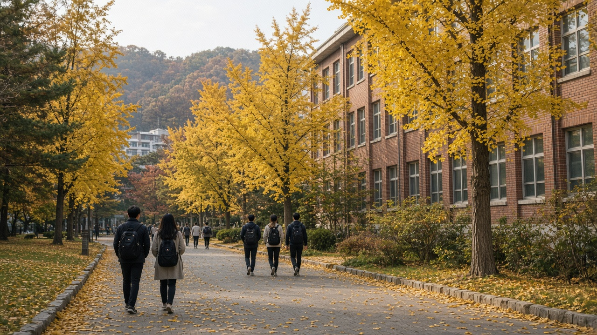
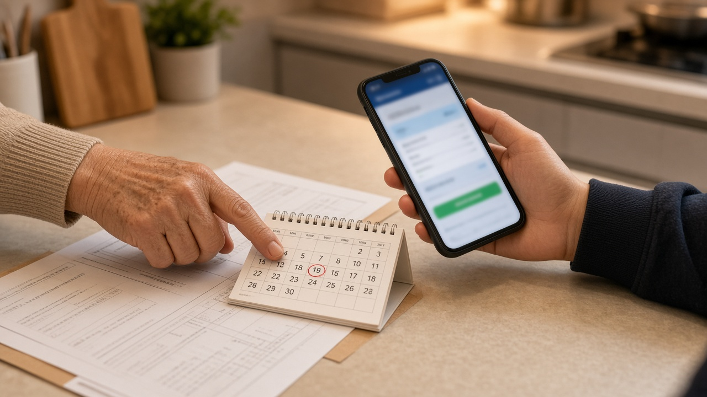

지방대 학자금대출 이자 면제 11월 20일부터 8구간까지, 2학기 신청은 17일 마감이라 오늘 확인할 것
지방에 있는 대학에 다니는 자녀를 두셨거나 본인이 학자금대출을 쓰고 있다면 이번 주 소식 하나는 꼭 챙겨 보셔야 해요.
11월 20일부터 비수도권 대학생의 취업 후 상환 학자금대출 이자 면제 대상이 기준 중위소득 200퍼센트 이하, 학자금 지원 8구간까지 넓어지거든요.
그런데 같은 주에 2학기 학자금대출 신청이 11월 17일, 대출 실행이 11월 18일에 끝나요.
무엇이 바뀌는지, 누가 해당되는지, 이번 주에 무엇을 해 두면 좋은지 차례로 정리해 볼게요.
무엇이 바뀌나, 지방대 학생은 8구간까지 이자 면제
지금까지 취업 후 상환 학자금대출 이자 면제는 소득 기준으로 보면 기준 중위소득 130퍼센트 이하, 학자금 지원 6구간까지였어요.
5월 19일 공포된 취업 후 학자금 상환 특별법 개정으로, 수도권이 아닌 지역 대학에 다니는 학생은 가구 소득인정액이 기준 중위소득 200퍼센트 이하이면 이자 면제 대상에 들어가요.
학자금 지원구간으로 따지면 8구간까지예요. 시행일은 11월 20일이에요.
면제를 받으면 저소득층이나 다자녀 가구 학생처럼 졸업하거나 의무 상환이 시작되기 전까지 생기는 이자를 내지 않게 돼요.
수도권 대학에 다니는 학생은 기존처럼 6구간까지가 기준이니, 같은 소득이라도 학교가 어디 있느냐에 따라 결과가 달라진다는 점을 알아 두세요.

이미 대출을 받은 학생은 어떻게 되나
가장 많이 궁금해하시는 부분이 이미 빌린 돈이에요.
한국장학재단 설명에 따르면 기존 대출자도 대상이 될 수 있지만, 법 시행일인 11월 20일 이후에 생기는 이자부터 면제돼요.
그동안 쌓인 이자를 돌려받는 것은 아니라는 뜻이에요.
또 법 부칙에는 대출 시점이 2015년 이전인 경우 기준 중위소득 200퍼센트 이하에 준하는 사람으로 교육부장관이 고시하는 기준을 따른다고 되어 있어요.
오래전에 대출을 받으셨다면 재단 고객상담센터 1599 2000에 본인 경우를 물어보시는 편이 정확해요.
이자 면제는 취업 후 상환 대출에만 적용돼요
여기서 꼭 구분해야 할 것이 대출 종류예요.
학자금대출은 크게 일정 소득이 생길 때까지 상환을 미뤄 주는 취업 후 상환 학자금대출과, 상환 시기를 스스로 정하는 일반 상환 학자금대출로 나뉘어요.
이번 이자 면제 확대는 취업 후 상환 학자금대출에 대한 이야기예요.
올해부터 취업 후 상환 등록금대출은 소득 요건과 관계없이 대학생과 대학원생 모두 이용할 수 있고, 생활비대출은 학부생 8구간 이하와 9구간 긴급생계곤란자, 대학원생 6구간 이하가 대상이에요.
이번 학기에 일반 상환 대출을 받은 학생은 자격 요건에 따라 11월 18일까지 취업 후 상환 대출로 전환 신청을 할 수 있어요.
면제 여부는 대출 시점에 확인된 자격 정보와 학자금 지원구간에 따라 정해지니, 내 구간이 몇 구간으로 나왔는지 먼저 확인해 보세요.

2학기 대출 마감이 11월 17일, 이번 주에 할 일
한국장학재단은 2026학년도 2학기 학자금대출 신청을 11월 17일까지 받고, 승인받은 학생은 11월 18일까지 대출 실행을 마쳐야 돈을 받을 수 있다고 안내했어요.
등록금대출은 학기 등록금 필요액 전액, 생활비대출은 학기당 최대 200만 원까지예요. 2학기 금리는 연 1.7퍼센트예요.
신청은 재단 누리집과 모바일 앱에서 평일과 주말 모두 오전 9시부터 자정까지 가능하지만, 대출 실행은 평일에만 이뤄져요.
재단은 마감일에 접속이 몰릴 수 있다며 미리 신청하고 실행까지 마쳐 달라고 당부했어요.
이번 학기에 새로 AI학업장려 학자금대출도 생겨, 대상 학과 학부생은 수강료와 교재비 등으로 연간 최대 200만 원을 쓸 수 있어요.
정리하면 이렇게 확인하세요
지방대에 다니고 학자금 지원 7구간이나 8구간이라면 이번 확대로 새로 이자 면제 대상이 될 수 있어요.
일반 상환 대출을 받았다면 11월 18일까지 취업 후 상환 대출 전환이 가능한지 살펴보고, 아직 2학기 대출을 신청하지 않았다면 11월 17일 마감 전에 서두르세요.
다만 이자가 없더라도 원금은 결국 갚아야 하는 빚이에요. 재단도 꼭 필요한 만큼만 빌려 달라고 거듭 당부하고 있어요.
자세한 자격과 내 구간은 한국장학재단 누리집이나 1599 2000에서 확인하실 수 있어요.
참고 자료 국가법령정보센터 취업 후 학자금 상환 특별법 법률 제21660호 2026년 5월 19일 공포 11월 20일 시행, 연합뉴스 2026년 5월 20일 보도, 뉴스핌 2026년 11월 5일 보도, 경북일보 한국장학재단 2학기 학자금대출 보도 www.kosaf.go.kr
태그 학자금대출 학자금대출이자면제 취업후상환학자금대출 한국장학재단 지방대학생 학자금지원구간 2학기학자금대출 생활비대출 기준중위소득200 대학생지원